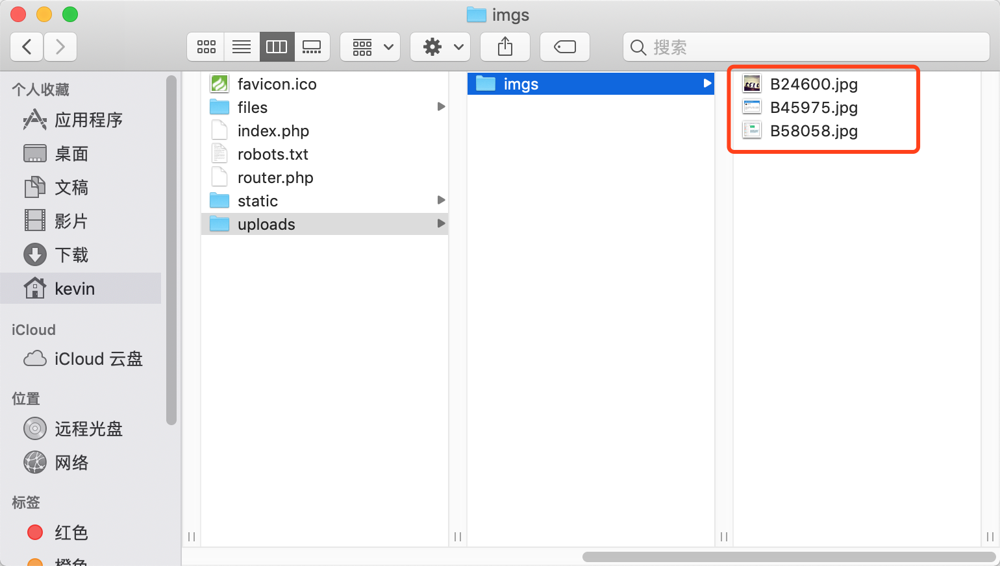

今天接到了一个从Excel内读取图片的需求，在网上查找了一些资料，基本实现了自己的需求，不过由于查到的一些代码比较久远，里面一些库方法已经被移除不存在了，所以不能直接移植到自己的项目里，需要稍加改动一下。
这里介绍一下分别使用phpspreadsheet和PHPExcel扩展库来实现读取Excel内图片的功能:
首先安装phpspreadsheet，由于线上服务器PHP版本是PHP5.6，所以需要安装兼容PHP5.6的版本,这里安装1.8.2版本
composer require phpoffice/phpspreadsheet=1.8.2然后就可以在项目里使用了
use PhpOffice\PhpSpreadsheet\Cell\Coordinate;
use PhpOffice\PhpSpreadsheet\IOFactory;
$imageFilePath = './uploads/imgs/'; //图片本地存储的路径
if (!file_exists($imageFilePath)) { //如果目录不存在则递归创建
mkdir($imageFilePath, 0777, true);
}
try {
$inputFileName = './files/1.xlsx'; //包含图片的Excel文件
$objRead = IOFactory::createReader('Xlsx');
$objSpreadsheet = $objRead->load($inputFileName);
$objWorksheet = $objSpreadsheet->getSheet(0);
$data = $objWorksheet->toArray();
foreach ($objWorksheet->getDrawingCollection() as $drawing) {
list($startColumn, $startRow) = Coordinate::coordinateFromString($drawing->getCoordinates());
$imageFileName = $drawing->getCoordinates() . mt_rand(1000, 9999);
switch ($drawing->getExtension()) {
case 'jpg':
case 'jpeg':
$imageFileName .= '.jpg';
$source = imagecreatefromjpeg($drawing->getPath());
imagejpeg($source, $imageFilePath . $imageFileName);
break;
case 'gif':
$imageFileName .= '.gif';
$source = imagecreatefromgif($drawing->getPath());
imagegif($source, $imageFilePath . $imageFileName);
break;
case 'png':
$imageFileName .= '.png';
$source = imagecreatefrompng($drawing->getPath());
imagepng($source, $imageFilePath, $imageFileName);
break;
}
$startColumn = ABC2decimal($startColumn);
$data[$startRow-1][$startColumn] = $imageFilePath . $imageFileName;
}
dump($data);die();
} catch (\Exception $e) {
throw $e;
}
public function ABC2decimal($abc)
{
$ten = 0;
$len = strlen($abc);
for($i=1;$i<=$len;$i++){
$char = substr($abc,0-$i,1);//反向获取单个字符
$int = ord($char);
$ten += ($int-65)*pow(26,$i-1);
}
return $ten;
}可以看到，图片被读取并存到了本地服务器中

PHPExcel实现从Excel文件里读取内容的方法和phpspreadsheet几乎一样，毕竟phpspreadsheet就是在PHPExcel基础上写的，不过PHPExcel由于已经被废弃了，所以建议优先使用phpspreadsheet，如果原来项目里一直使用了PHPExcel也可以继续使用PHPExcel的方法
use PHPExcel_IOFactory;
use PHPExcel_Cell;
try {
$inputFileName = './files/1.xlsx';
$inputFileType = PHPExcel_IOFactory::identify($inputFileName);
$objReader = PHPExcel_IOFactory::createReader($inputFileType);
$objPHPExcel = $objReader->load($inputFileName);
} catch (\Exception $e) {
die('加载文件发生错误："'.pathinfo($inputFileName,PATHINFO_BASENAME).'": '.$e->getMessage());
}
$sheet = $objPHPExcel->getSheet(0);
$data = $sheet->toArray(); //该方法读取不到图片，图片需单独处理
$imageFilePath = './uploads/imgs/'; //图片本地存储的路径
if (!file_exists($imageFilePath)) {
mkdir($imageFilePath, 0777, true);
}
//处理图片
foreach ($sheet->getDrawingCollection() as $img) {
list($startColumn, $startRow) = PHPExcel_Cell::coordinateFromString($img->getCoordinates()); //获取图片所在行和列
$imageFileName = $img->getCoordinates() . mt_rand(1000, 9999);
switch($img->getExtension()) {
case 'jpg':
case 'jpeg':
$imageFileName .= '.jpeg';
$source = imagecreatefromjpeg($img->getPath());
imagejpeg($source, $imageFilePath.$imageFileName);
break;
case 'gif':
$imageFileName .= '.gif';
$source = imagecreatefromgif($img->getPath());
imagejpeg($source, $imageFilePath.$imageFileName);
break;
case 'png':
$imageFileName .= '.png';
$source = imagecreatefrompng($img->getPath());
imagejpeg($source, $imageFilePath.$imageFileName);
break;
}
$startColumn = ABC2decimal($startColumn);
$data[$startRow-1][$startColumn] = $imageFilePath . $imageFileName;
}
var_dump($data);
public function ABC2decimal($abc)
{
$ten = 0;
$len = strlen($abc);
for($i=1;$i<=$len;$i++){
$char = substr($abc,0-$i,1);//反向获取单个字符
$int = ord($char);
$ten += ($int-65)*pow(26,$i-1);
}
return $ten;
}参考文章: